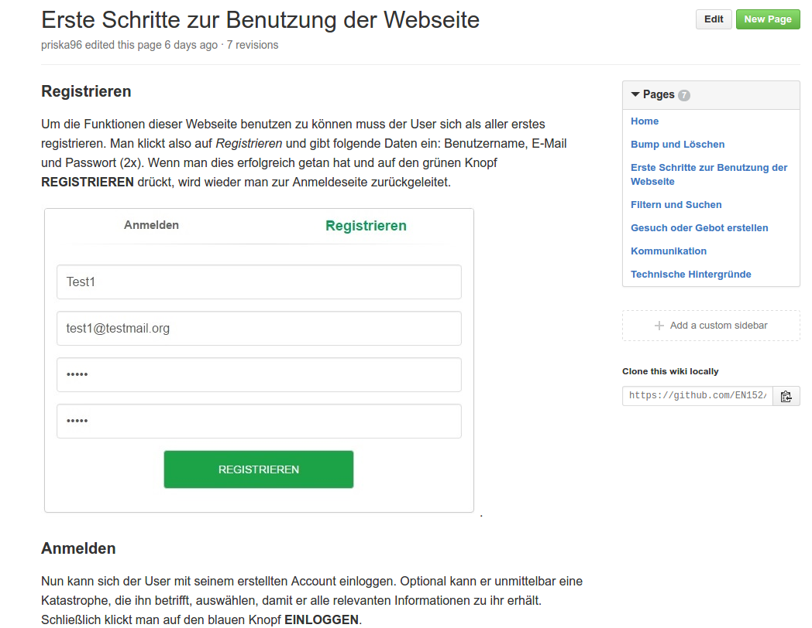

Zwischenpräsentation: Sprint #3
Emergency Notifications
Programmierpraktikum: Soziale Netzwerke
Jasper Bernhardt
Elias Grünewald
Priska Kohnen
Bruno Kortowski
Nikita Krohmer
Nikias Praast
Franz Tscharf
Vincent Ulitzsch
Elias Grünewald
Priska Kohnen
Bruno Kortowski
Nikita Krohmer
Nikias Praast
Franz Tscharf
Vincent Ulitzsch
EN152
Sommersemester 2016
Complex and Distributed IT Systems
Technische Universität Berlin

Complex and Distributed IT Systems
Technische Universität Berlin
derzeitiger Stand:
Was haben wir bisher erreicht?
- Suchen und Bieten
- Personensuche
- dynamische Karten
- NGOs und Staaten
- Administration
- Dokumentation
...und vieles weitere mehr
- Must-Have's ✔
bisherige Arbeit:
Retrospektive
- Herausforderungen/Probleme
- Systemannahmen/Realitätstreue
- Testing, Datenversionierung, Sicherheit
- Chancen/Erfolge
- breites Funktionalitätsspektrum
- geringer Resourcenverbrauch
- Verknüpfungen
- Bedienbarkeit


Sprint #3:
Planungen
- Wissen, Abstimmungen, Archiv
- Benachrichtigungen
- Events
Sprint #4:
Planungen
- Design
- Optimierung
- Intelligenz
Sprint #3:
Fragen?
Disaster Communication Plaform